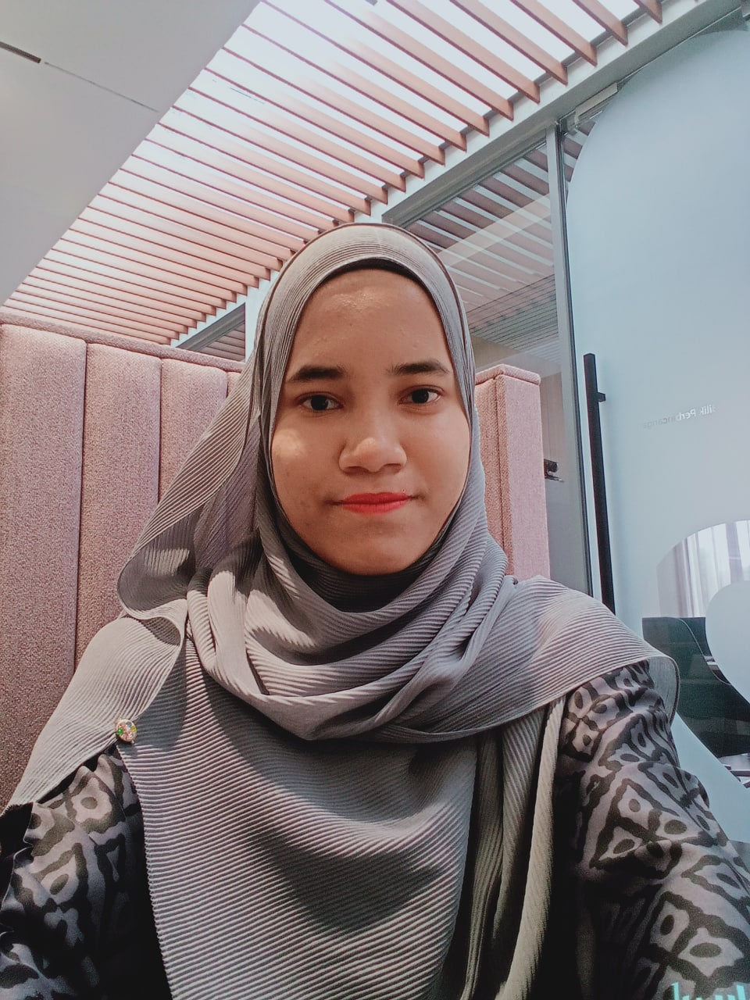
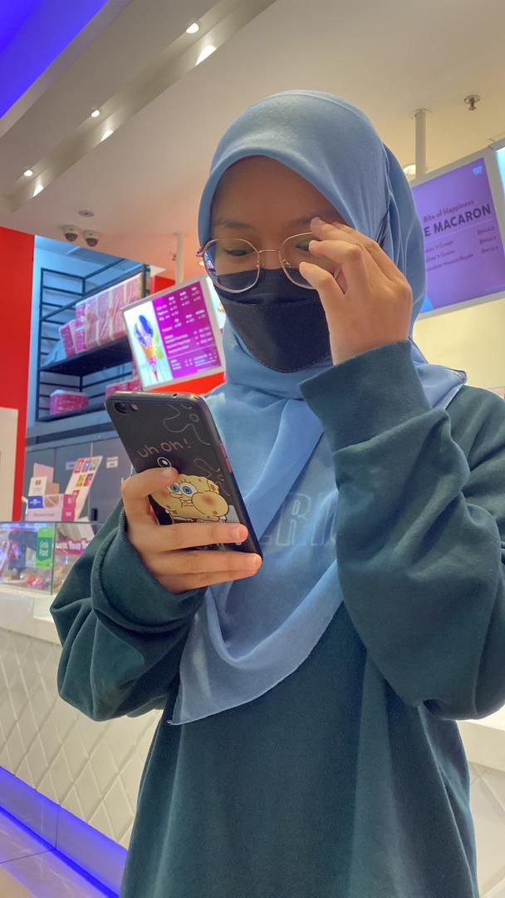
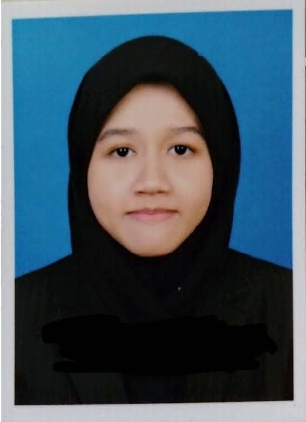
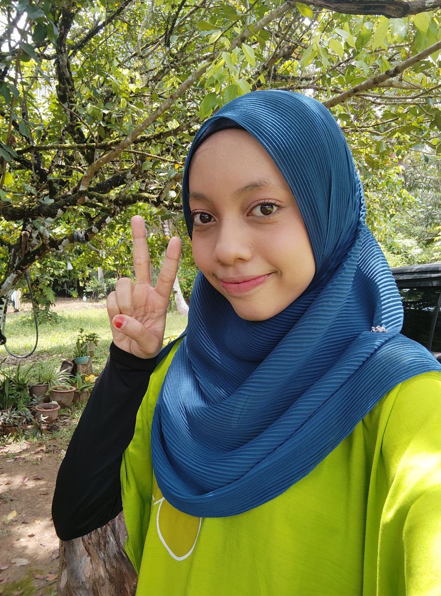
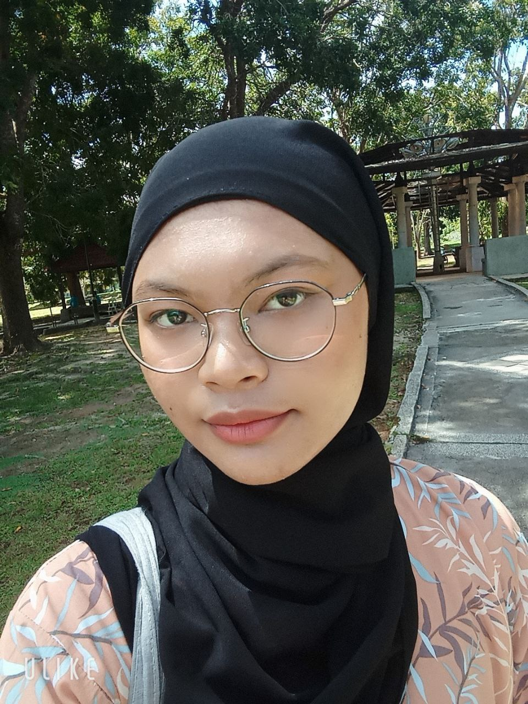

This is Yaya. She is the eldest among us. She is April baby. She live in Maran, Pahang

This is Wana. She is like a mother to us as she always takes care of us. She is March babies. She live in Gurun, Kedah

This is Aisyhah. I have 2 friends with similar name, only spelling differentiate both of them. She is shy and she love to observe and listens instead of talking. She live in Selama,Perak

This is Nurin. She is the cutest in our group members and unexpectedly she have a rare taste in music as she love opera. She live in Jitra,Kedah

This is Alya. She is feminine and happy go lucky. She is full of wisdom and she can be a drama queen too, sometimes. She live in Sentul, Kuala Lumpur

This is Aishah. She is the tallest in our group. She loves to take pictures and she is an absolute emotional wrecker. Most important thing is, she can survive alone no matter where she is. She live in Kota Bharu,Kelantan,